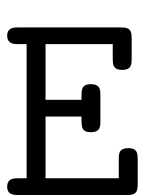
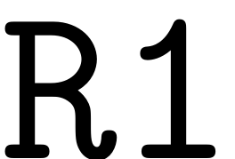
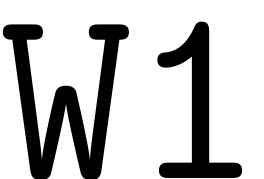
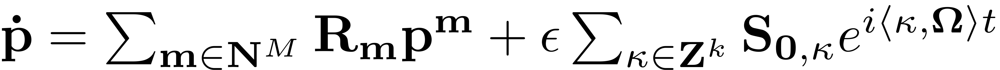
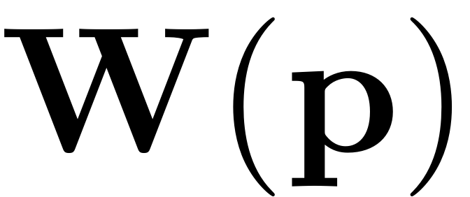
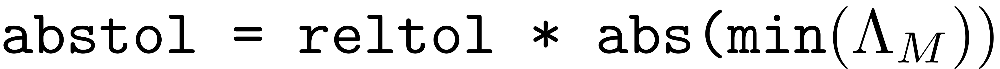

Invariant Manifolds
Contents
A object of the invariant manifold class requires an underlying dynamical system to be initialised as
M = Manifold(DS);
The class allows to compute general invariant manifolds, such as Center Manifolds, Lyapunov Subcenter Manifolds (LSM) and Spectral Submanifolds (SSM).
The spectral subspace belonging to a set of modes over which the invariant manifold is to be constructed is denoted as . The set of modes is indexed into an array which allows to choose the spectral subspace via the class method
M.choose_E(modes)
So for instance, if the Manifold is to be constructed over the first pair of modes in the spectrum, which has been computed in advance by the linear_spectral_analysis function, then the array would be
modes = [1,2]
Manifold construction
For the theoretical background to the computation of invariant manifolds please refer to SSM-Theory.
Resonances
For the existence of a given manifold the resonance conditions explained in Spectrum and Resonances need to be fulfilled. When choosing the spectral subspace over which the invariant manifold is to be constructed, a struct array which contains the information on inner and outer resonances is constructed and may be utilised to verify whether SSM analysis is applicable. Any near outer resonance will render the cohomological equations nearly singular which leads to poor convergence of the SSM computation.
Autonomous manifold
The autonomous parametrisation of the manifold and the reduced dynamics on it, which are stored in struct arrays W0 and R0, are computed automatically up to a desired order using the method
[W0, R0] = M.compute_whisker(order)
Non-autonomous manifold
In order to obtain the non-autonomous parametrisation of the manifold and reduced dynamics the non-autonomous invariance equation has to be solved. This computation is fully automated and can be carried out as follows. Note that this is only supported in the multi-index based computation. The non-autonomous reduced dynamics and SSM coefficients are stored in struct arrays  and  respectively.
[W1, R1] = M.compute_perturbed_whisker( order,W0,R0,varargin)
Options
The options for the computation of the invariant manifold can be set as follows. They are introduced along with the default parameters that are set for them.
set(M.Options,'notation','tensor') % Notation which is used in manifold computation. Should be either 'tensor' or 'multiindex' and the same as is set in the DS class options.
The two methods which may be chosen for the computation of the invariant manifold are a graph style and a normal form type of parametrisation. The parametrisation style can be chosen via setting
set(M.Options,'paramStyle','normalform') % Computation of the manifold in graph or normalform style parametrisation. See
The graph style is only available for a tensor based computation.
For the computation of the manifold either the full non-autonoomous contributions may be computed, or a leading order approximation can be chosen. This leading order computation only computes an approximation of the reduced dynamics as

The results are then mapped to the full physical space using the autonomous SSM parametrisation  only.
set(M.Options, 'contribNonAuto', true) % whether to compute non-autonomous contributions to the manifold and the reduced dynamics. % if set to false, only the leading order non-autonomous reduced dynamics are computed
Further important settings include the tolerances for the resonance analysis. As we have seen in Spectrum and Resonances both the existence of the SSM as well as the normal form of the reduced dynamics on it depend crucially on a detailled understanding of the resonance relationship that the modes assume relative to each other. To set the relative tolerance for determining when a mode is resonant the following option may be set
set(M.Options,'reltol',0.5)
The absolute tolerance below which a resonance is trigered is then . So, if a integer combination of modes in the master or restricted space adds up to a value closer to any mastermode than this absolute tolerance, then it is considered to be in resonance.
For setting the tolerance for the control of internal resonances one may tune
set(M.Options,'IRtol',0.05)
Other methods
Further methods which are provided for the treatment of invariant manifolds are
[rho] = M.compute_analyticity_domain(appr_order)
which computes the analyticity domain of an SSM at approximation order appr_order, the invariance error
err = M.compute_auto_invariance_error(W,R,rhosamp,orders,ntheta,varargin);
and
M.cohomological_solution(obj, i, W_0, R_0,multi_input,DStype);
which solves the  -th order of the autonomous cohomological equations. It is used by the computed_whisker routine.
-th order of the autonomous cohomological equations. It is used by the computed_whisker routine.